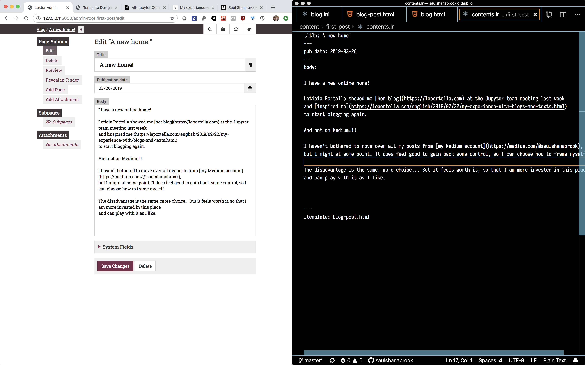

A new home!
2019-03-26
I have a new online home!
Leticia Portella showed me her blog at the Jupyter team meeting last week and inspired me to start blogging again.
And not on Medium!!!
I haven't bothered to move over all my posts from my Medium account, but I might at some point. It does feel good to gain back some control, so I can choose how to frame myself.
The disadvantage is the same, more choice... But it feels worth it, so that I am more invested in this place and can play with it as I like.
Luckily, we were already talking about having a blog at Quansight and someone brought up using lektor to manage it.
I tried it out and really like it!
I can easily edit the file, or edit via a web GUI.
Thank you open source world for this wonderful tool :)
